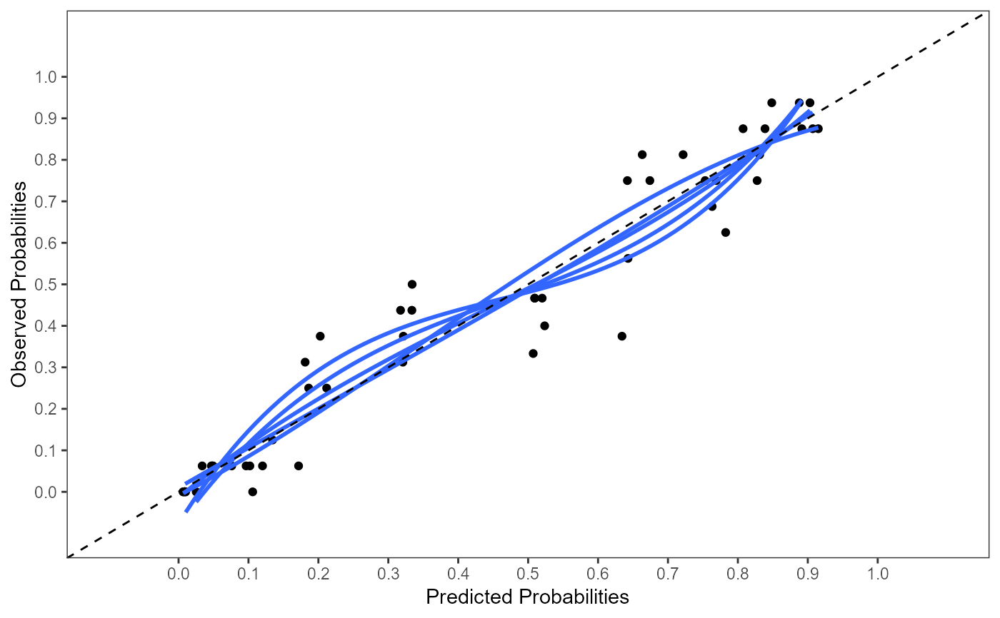

R/pool_performance.R
pool_performance.Rdpool_performance Pooling performance measures
pool_performance( data, nimp, impvar, Outcome, predictors, cal.plot, plot.indiv, groups_cal = 10 )
| data | Data frame with stacked multiple imputed datasets. The original dataset that contains missing values must be excluded from the dataset. |
|---|---|
| nimp | A numerical scalar. Number of imputed datasets. Default is 5. |
| impvar | A character vector. Name of the variable that distinguishes the imputed datasets. |
| Outcome | Character vector containing the name of the outcome variable. |
| predictors | Character vector with the names of the predictor variables as used in the formula part of an glm object. |
| cal.plot | If TRUE a calibration plot is generated. Default is FALSE. Can be used in combination with int_val = FALSE. |
| plot.indiv | If TRUE calibration plots for each separate imputed dataset are generated, otherwise all calibration plots are plotted in one figure. |
| groups_cal | A numerical scalar. Number of groups used on the calibration plot. Default is 10. If the range of predicted probabilities is low, less than 10 groups can be chosen. |
perf <- pool_performance(data=lbpmilr, nimp=5, impvar="Impnr", Outcome = "Chronic", predictors = c("Gender", "Pain", "rcs(Tampascale, 3)", "Smoking", "Function", "Radiation", "Age", "factor(Carrying)"), cal.plot=TRUE, plot.indiv=FALSE)perf$ROC_pooled#> 95% Low AUC 95% Up #> AUC (logit) 0.8044 0.8763 0.9243